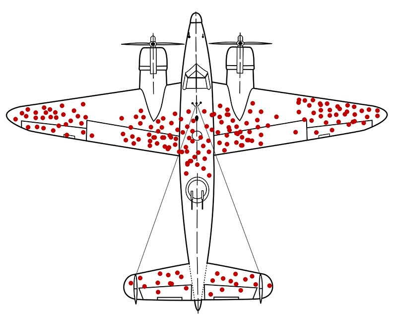

Survivorship Bias!
A few facts about the Survivorship Bias
Survivorship bias, survival bias or immortal time bias is the logical error of concentrating on the people or things that made it past some selection process and overlooking those that did not, typically because of their lack of visibility. This can lead to some false conclusions in several different ways. It is a form of selection bias. Survivorship bias can lead to overly optimistic beliefs because failures are ignored, such as when companies that no longer exist are excluded from analyses of financial performance. It can also lead to the false belief that the successes in a group have some special property, rather than just coincidence (correlation "proves" causality). For example, if three of the five students with the best college grades went to the same high school, that can lead one to believe that the high school must offer an excellent education when, in fact, it may be just a much larger school instead. This can be better understood by looking at the grades of all the other students from that high school, not just the ones who made the top-five selection process. Another kind of survivorship bias would involve thinking that an incident was not all that dangerous because everyone communicated with afterwards survived. Even if one knew that some people are dead, they would not have their voice to add to the conversation, leading to bias in the conversation.
Areas where the Survivorship Bias can be seen
- In business, finance, and economics
- In history
- In architecture and construction
- In highly competitive careers
- In the military
- In cats
- In tropical trees
- In studies of evolution
- Portrayal of disability
- In business law
The 3 truth-in-advertising problems that it generates
- The advertisement either fails to disclose the existence of relevant differences between the two populations or describes them in insufficient detail;
- These differences result from the company's deliberate "pre-screening" of prospective customers to ensure that only customers with traits increasing their likelihood of success are allowed to purchase the product or service, especially when the company's selection procedures or evaluation standards are kept secret;
- The company offering the product or service charges a fee, especially one that is non-refundable or not disclosed in the advertisement, for the privilege of attempting to become a customer.
| Common Bias | Year of Discovery |
|---|---|
| Representativeness Heuristic | 1974 |
| Focalism | 1988 |
| Planning fallacy | 1979 |
| Framing | 1981 |
| The Endowment Effect | 1981 |
| Survivorship bias | 1943 |